LinkVid Originals
Night Train
Night Train
2019 · Action / Thriller
LinkVid
A hostage/terrorist situation aboard a high-speed USRC line — the dramatic irony of a beloved national institution weaponized against the public it serves. LinkVid, the platform with no legacy theatri
Drama

The Freedman's Road
The Freedman's Road
~1913–1914 · Drama
Dir. Vera Hollis · Hollis Studio
A thirty-minute narrative film following a Black veteran of the War Between the States returning home to Mississippi. Directed by Vera Hollis.

The Gulf
The Gulf
~1923 · Melodrama
Dir. Vera Hollis · Hollis Studio
Vera Hollis's late-career masterpiece and final major directorial work. A melodrama set in St.
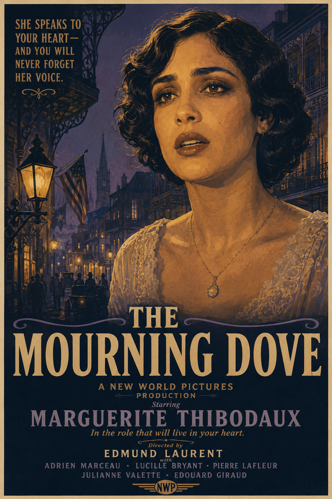
The Mourning Dove
The Mourning Dove
~1928 · Melodrama
New World Pictures
Marguerite Thibodaux's breakthrough film. A melodrama set in New Orleans during the Caribbean War period.
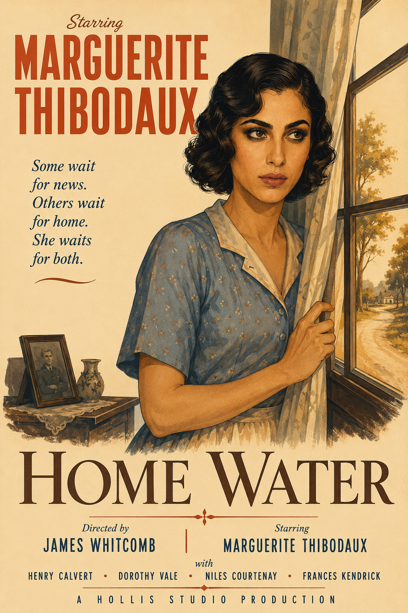
Home Water
Home Water
~1939 · Home Front Drama
Hollis Studio
A home front drama following a family with sons overseas. Marguerite Thibodaux in her mature career peak.
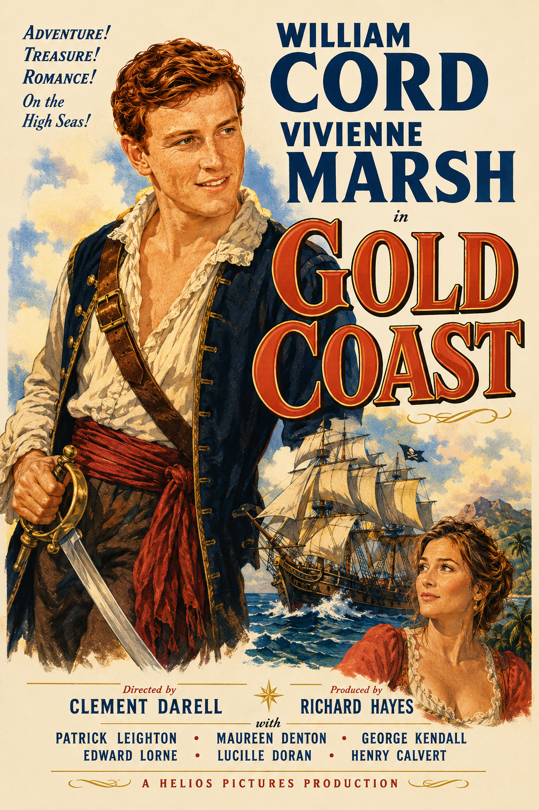
Gold Coast
Gold Coast
~1946 · Romantic Drama
Helios Pictures
William Cord's postwar romantic peak — a glossy, beautifully photographed romantic drama making full expressive use of color in a non-epic context. Cord opposite Vivienne Marsh in their first major pa
The Marcus Petition
The Marcus Petition
~1947 · Historical Drama
Dir. Leon Dupree · Hollis Studio
The most politically significant film of the Freeman era. A drama about a Black attorney in the post-War Between the States South fighting a wrongful conviction case.
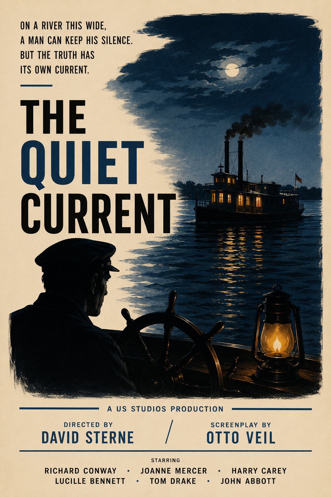
The Quiet Current
The Quiet Current
~1950 · Thriller
Dir. David Sterne · US Studios
The resistance's answer — though it would never call itself that. A psychological thriller following a river boat captain who discovers his first mate has been falsely accused and must decide whether

Coral and Gold
Coral and Gold
~1951 · Romantic Epic
Helios Pictures
Helios caught in the middle — a lush romantic epic set in the Caribbean in the 1820s. Cord and Marsh in their third and most commercially successful pairing; their screen chemistry at its peak.
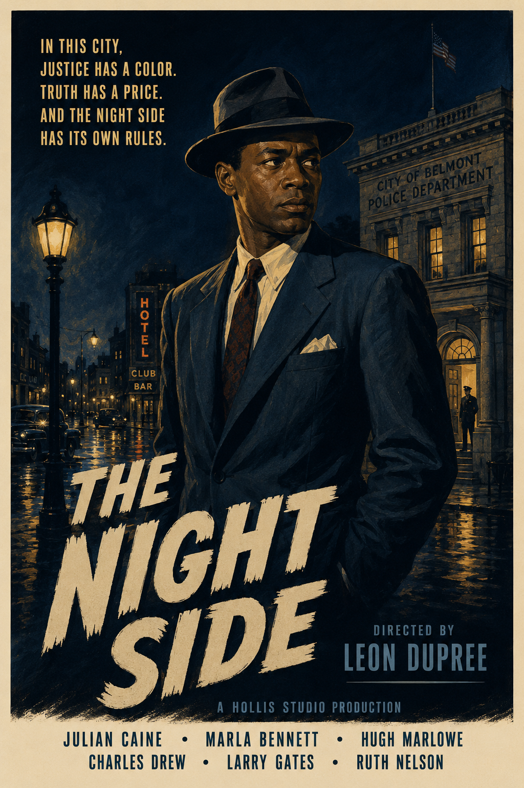
The Night Side
The Night Side
~1952 · Crime Drama
Dir. Leon Dupree · Hollis Studio
Leon Dupree's Nolan-era statement. A crime drama — genre cover — set in a Southern city, following a Black detective navigating a corrupt police department.
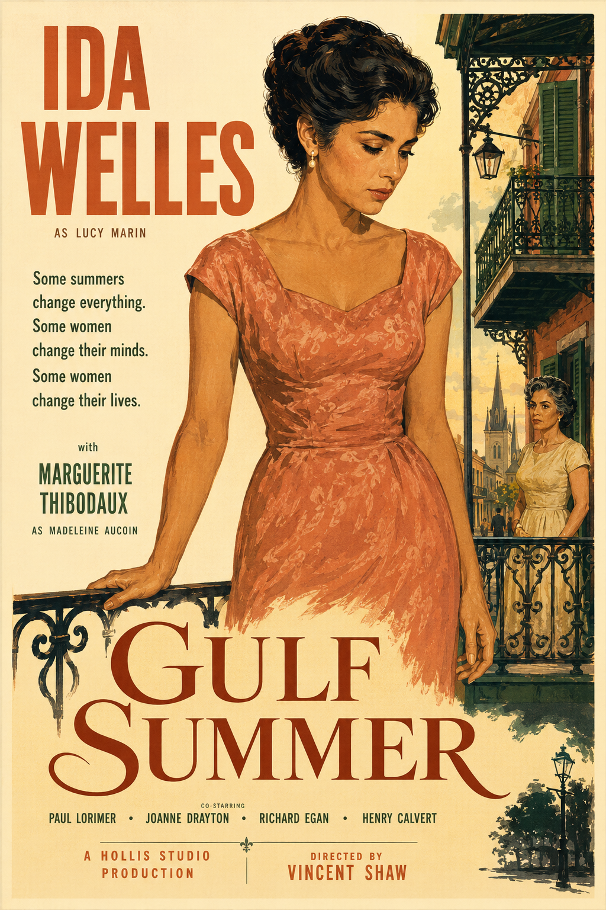
Gulf Summer
Gulf Summer
~1957 · Melodrama
Helios Pictures
Ida Welles's breakthrough into serious material. A melodrama set in New Orleans following a woman navigating the dissolution of her marriage and the discovery of her own independence.
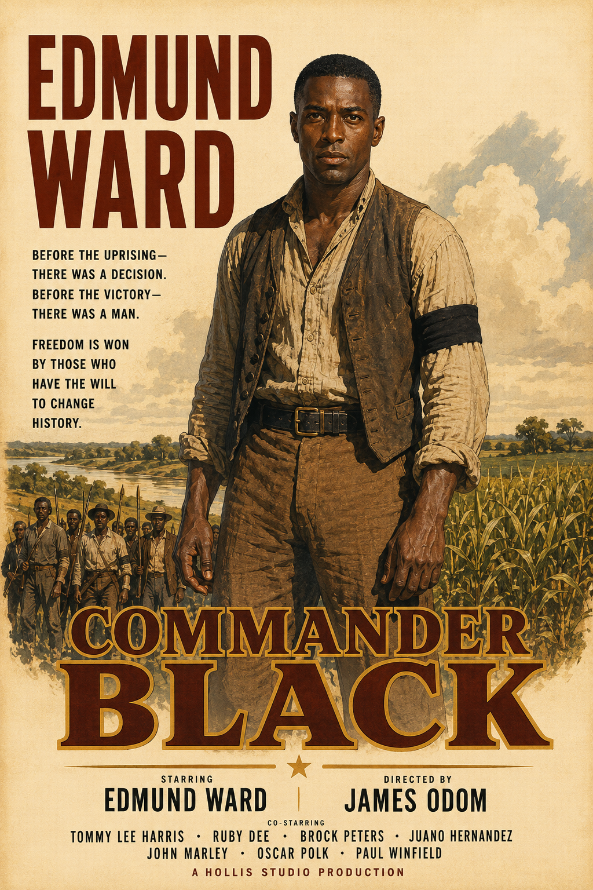
Commander Black
Commander Black
~1958 · Biopic
Dir. James Odom · Hollis Studio
James Odom's defining work — a color sound biopic of Joshua Black from his years as a house slave through the founding of the Republic of New Africa and the July 4th emancipation. Odom's direction is
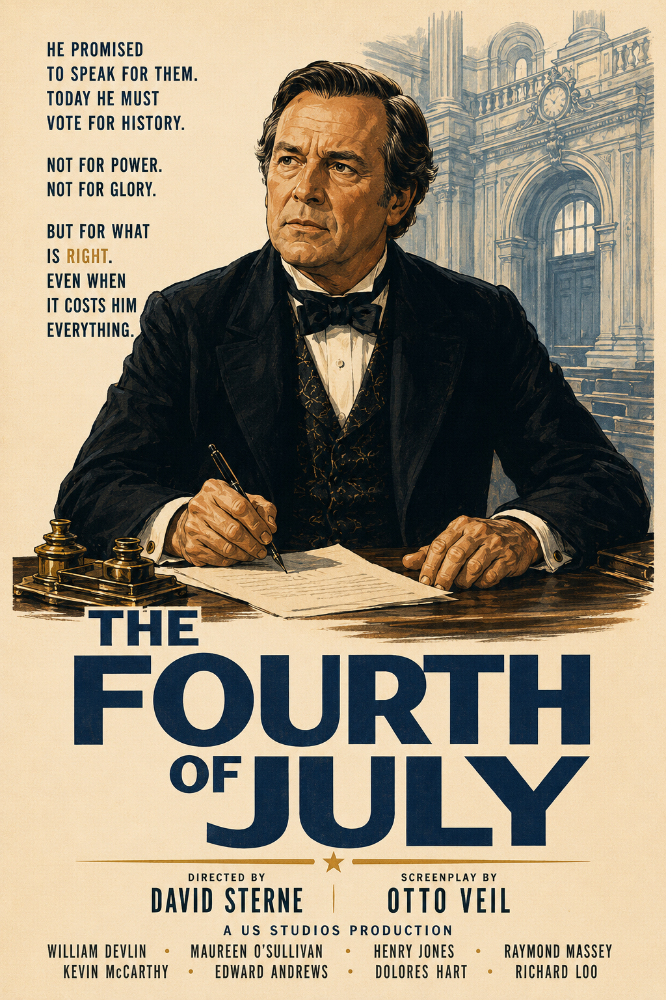
The Fourth of July
The Fourth of July
~1958 · Political Drama
Dir. David Sterne · US Studios
David Sterne's centennial film — the six weeks of congressional horse-trading behind the Negro Emancipation Act's passage. Follows a fictional Democratic congressman from Ohio who privately supports e

After Atlanta
After Atlanta
~1959 · Reconstruction Drama
Dir. Leon Dupree · Hollis Studio
Leon Dupree's reconstruction ensemble — set in New Orleans, 1861–1863. Five characters: a newly elected Black state legislator, his wife managing a freedmen's school, a white Free State officer discov
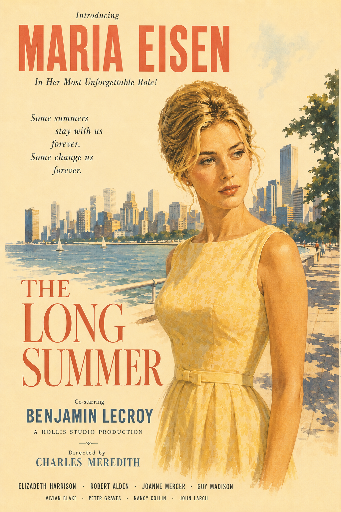
The Long Summer
The Long Summer
~1961 · Romantic Drama
Hollis Studio
Set in Calumet — the NAU's cosmopolitan hub. A woman in her late twenties navigating the end of one relationship and the beginning of another over a single summer.

American Boy
American Boy
October 1962 · Drama
Dir. Joseph Tomb · Helios Pictures
Two soldiers — Thomas Gallant (Benjamin LeCroy) and Peter Strand (Scott Bell) — fall in love in the European theater of the Global War. Gallant had been suppressing his nature his entire life; Strand
The Benefit of the Doubt
The Benefit of the Doubt
~1963
Dir. Leon Dupree · New World Pictures
Ward defends a man accused of a violent crime. He wins.
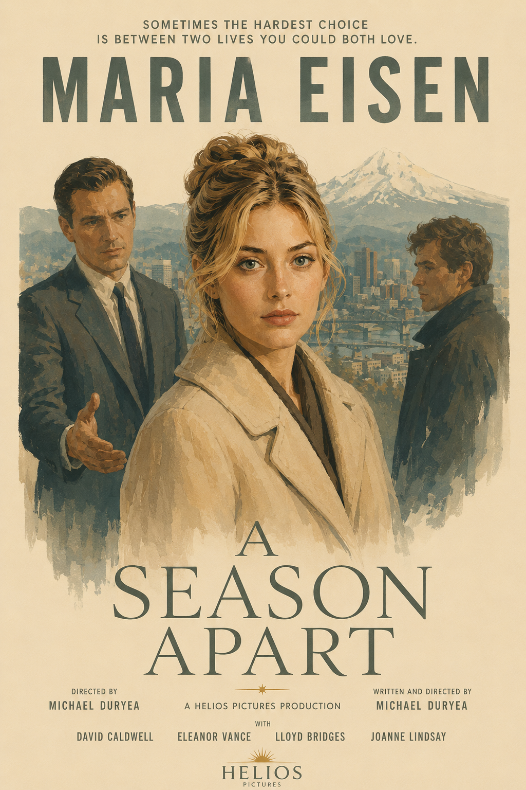
A Season Apart
A Season Apart
~1964 · Romantic Drama
Helios Pictures
Set in New Boston — the Pacific Northwest's major city, the NAU's Pacific gateway. A woman choosing between two versions of her life: the stable, conventional path and the uncertain, vital one.
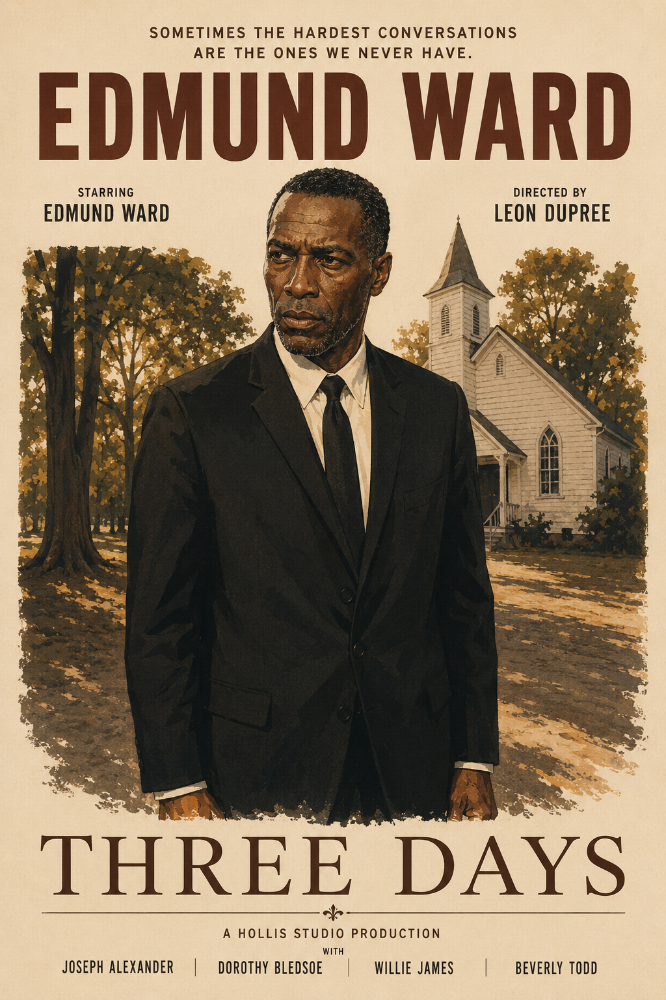
Three Days
Three Days
~1967 · Drama
Dir. Leon Dupree · Hollis Studio
The second Dupree/Ward collaboration. A death brings a father (Ward) and his adult son together.
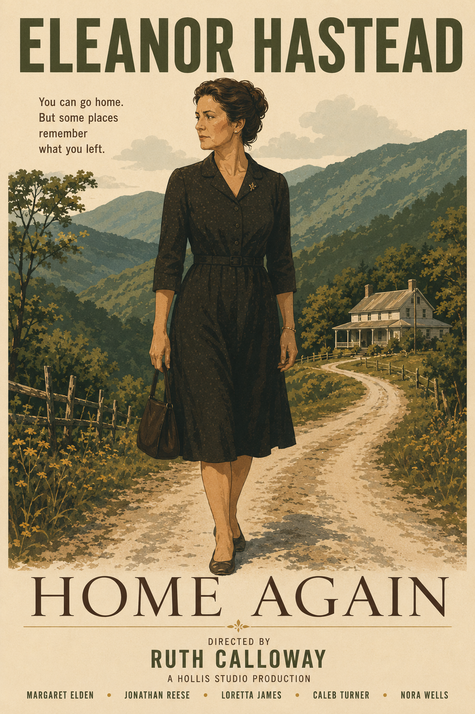
Home Again
Home Again
~1968 · Drama
Dir. Ruth Calloway · Hollis Studio
Ruth Calloway's debut feature. A woman returns to her Appalachian hometown after decades away for a funeral, and finds herself reckoning with who she left behind and who she became.
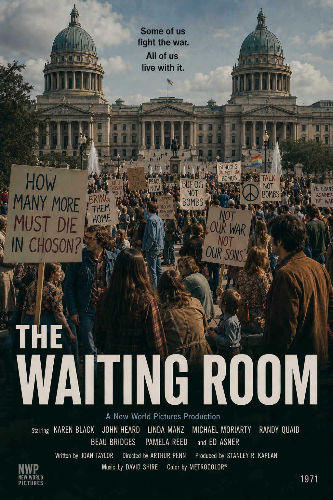
The Waiting Room
The Waiting Room
~1971 · Drama
New World Pictures
The Choson War as experienced from a continent away. Families, TC screens, a senator's office, a protest outside a government building.
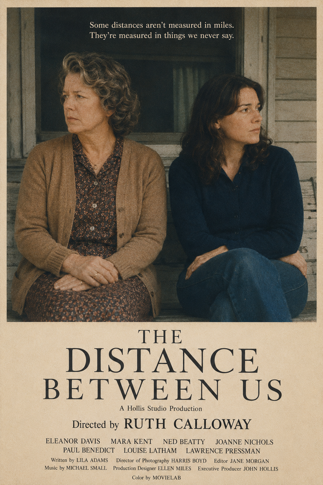
The Distance Between Us
The Distance Between Us
~1972 · Drama
Dir. Ruth Calloway · Hollis Studio
Ruth Calloway's second film. A mother and adult daughter — the generational divide as subject rather than backdrop.

The Long Way
The Long Way
~1975 · Drama
Dir. Ruth Calloway · Hollis Studio
Calloway pushing her aesthetic into less familiar territory — a road film, more formally adventurous than her previous work. A woman in motion, landscape as moral presence.
Together
Together
~1981–1982 · Romance
Dir. Peter Vane · Hollis Studio
Peter Vane's debut feature. Two women in a contemporary relationship — the marriage equality question present the way a locked door is present, felt without being announced.
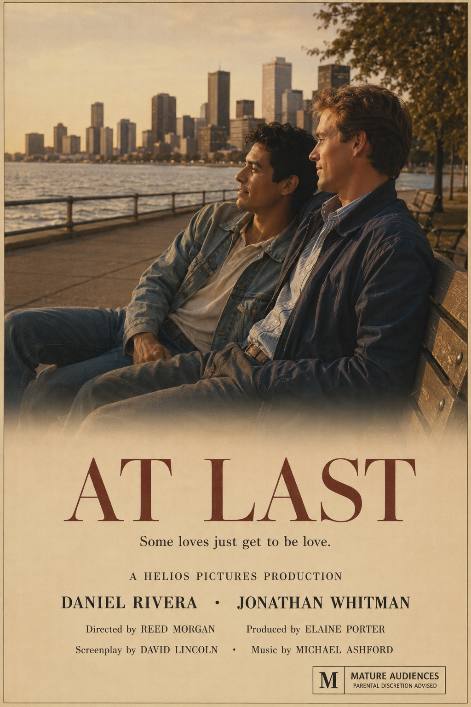
At Last
At Last
~1986–1987 · Romance
Helios Pictures
The cinema's response to marriage equality — a year or two after the fact. Two men.
Abernathy
Abernathy
~1978–1979 · Historical Drama
Dir. Ruth Calloway · Hollis Studio
Ruth Calloway's major statement — the dramatization of the Abernathy murder (autumn 1944) and the founding marches. Episcopal priest George Abernathy as the emotional anchor; Jesse Pike as a visible c
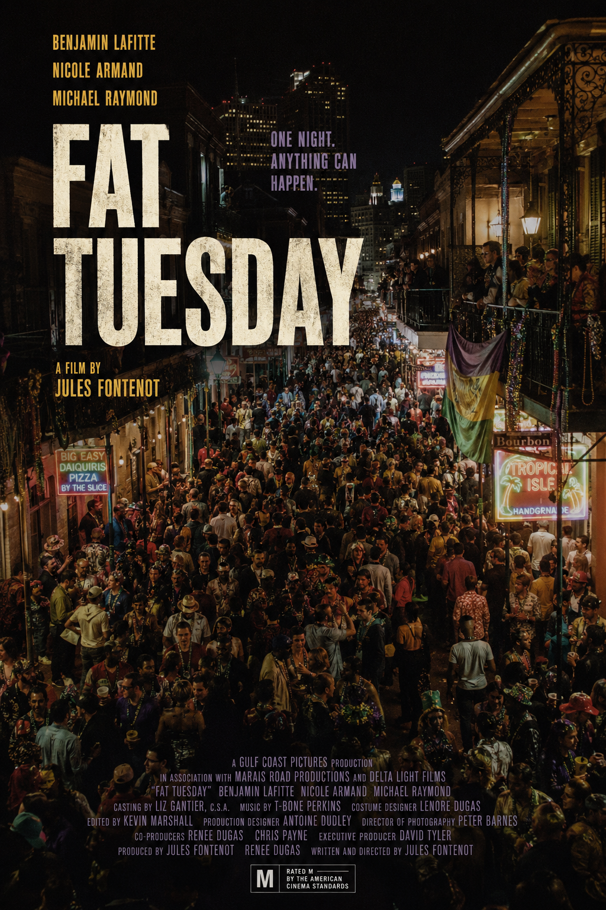
Fat Tuesday
Fat Tuesday
~1995–1996 · Drama
Dir. Jules Fontenot · Gulf Coast Pictures
Jules Fontenot's debut feature. Mardi Gras as dramatic pressure rather than backdrop — the city transformed, normal rules suspended, something coming to a head under the surface of the celebration.
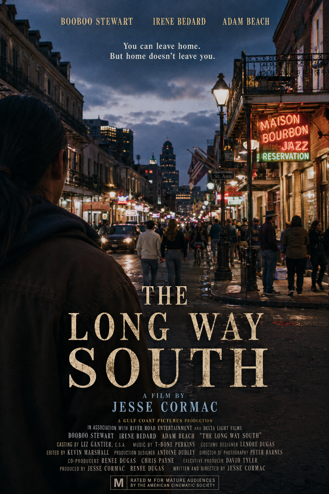
The Long Way South
The Long Way South
~1996–1997 · Drama
Dir. Jesse Cormac · Gulf Coast Pictures
Jesse Cormac's debut feature. A man from Kanasaw comes to New Orleans; characters from both worlds in conversation; the bridge between them the dramatic engine.
November '01
November '01
~2005–2007 · Political Drama
US Studios
The Mercer withdrawal gambit — the public deadline, the summer of nobody believing it, November 7th itself, and the Ottoman about-face. Told from inside the room: an aide or junior diplomat watching t
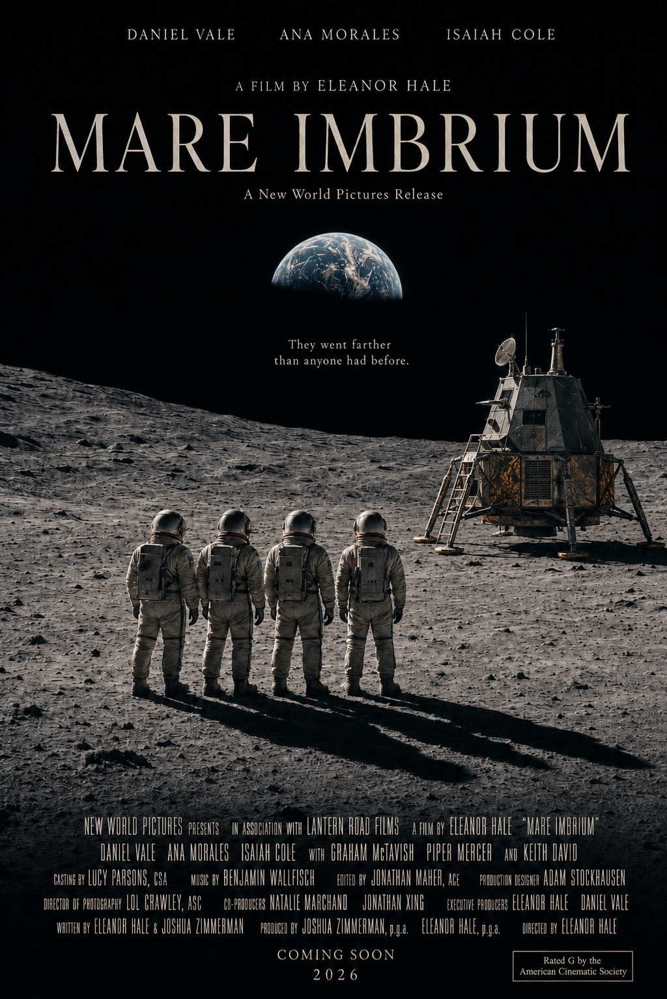
Mare Imbrium
Mare Imbrium
2026 · Historical Drama
Released for the 50th anniversary of the 1976 moon landing — a prestige historical film about the mission itself, the crew (Curtis Waverly, Owen Stirling, Isabel Carrera, Abner Lyons — Carrera the fir
Historical Epic

The Long March
The Long March
~1917–1918 · Historical Epic
New World Pictures
A War Between the States epic following a Free State regiment from enlistment through the fall of Atlanta. The first film to feel genuinely cinematic in the modern sense — real location photography, c

Joshua
Joshua
~1921 · Biopic
Dir. Samuel Archer · Independent
A feature-length account of Joshua Black's 1860 Mississippi slave uprising. Directed and independently produced by Samuel Archer, financed through Black investors and Freedmen's community organization
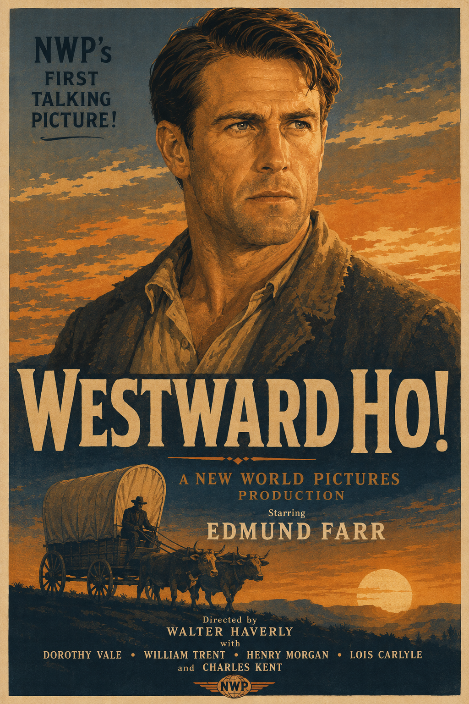
Westward Ho!
Westward Ho!
~1925–1926 · Pioneer Drama
New World Pictures
NWP's first commercially successful talkie — a pioneer story set in the 1850s Oregon Country. Edmund Farr leads.
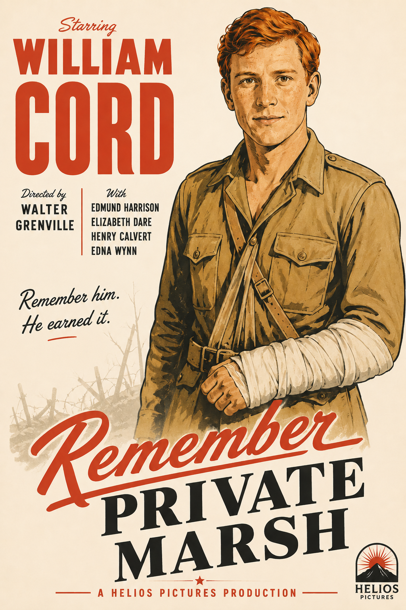
Remember Private Marsh
Remember Private Marsh
1936 · War Drama
Helios Pictures
The Global War era's defining dramatic film, and the breakout for both William Cord and Helios Pictures. Private Marsh — a natural leader who looks out for the underdog — carries his unit through trai
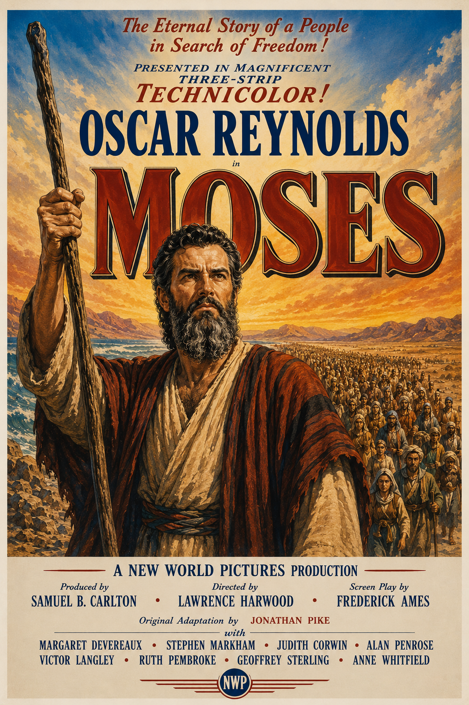
Moses
Moses
1942 · Biblical Epic
New World Pictures
The first color feature film. A Biblical epic.
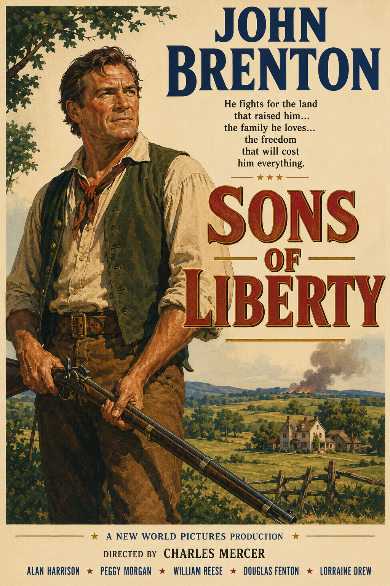
Sons of Liberty
Sons of Liberty
~1949 · Historical Epic
New World Pictures
The archetypal Nolan-era accommodationist film. A sweeping American Revolution epic — safe historical subject, unambiguous heroism, gorgeous color cinematography.
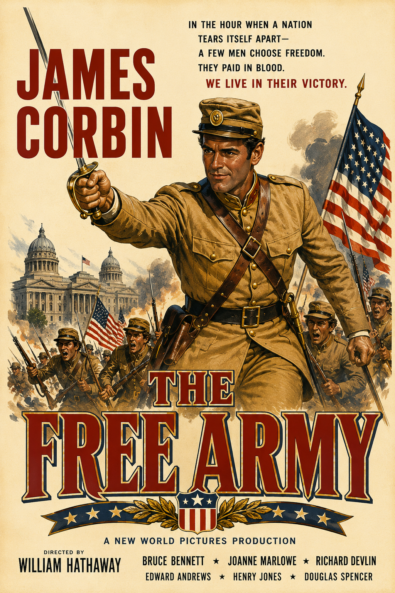
The Free Army
The Free Army
~1957 · Historical Epic
New World Pictures
The big commercial centennial epic. Follows the Free Army of the West's campaign from the liberation of Franklin through the fall of Atlanta.

Galvez Town
Galvez Town
~1971–1972 · Historical Epic
Dir. Mateo Herrera · Texian-American Co-Production
Mateo Herrera's St. Augustine debut.
The Campaign
The Campaign
~1972 · Political Drama
Dir. Leon Dupree · New World Pictures
The third and final Dupree/Ward collaboration. Ward as a staffer inside a fictional presidential campaign, watching someone he respects make a choice he can't respect.
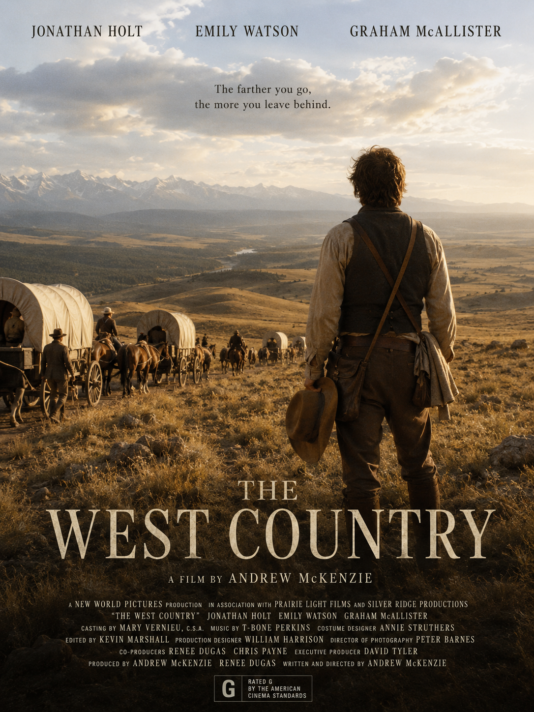
The West Country
The West Country
~early-mid 2000s · Western
New World Pictures
The genre revival NWP needed — "western" in the WBT sense: Oregon Trail-era westward expansion, survival, land, and family rather than gunfights. A multi-generational saga beginning in the 1840s: the
War Films
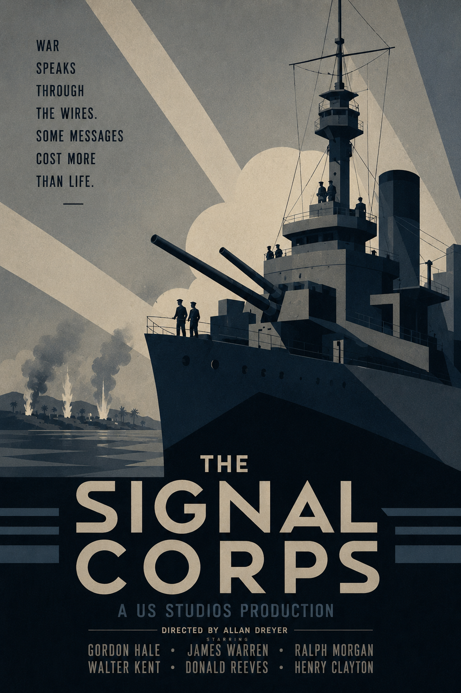
The Signal Corps
The Signal Corps
~1929 · War Drama
US Studios
The first major sound-era war film — a dramatization of the Caribbean War's naval campaign. Less interested in heroism than in the machinery and cost of modern warfare.
The Courier
The Courier
~1933 · Espionage Thriller
US Studios
A pre-entry espionage thriller — an American operative in Prussia uncovering military intelligence. Tense, morally grayer than later wartime productions will allow.
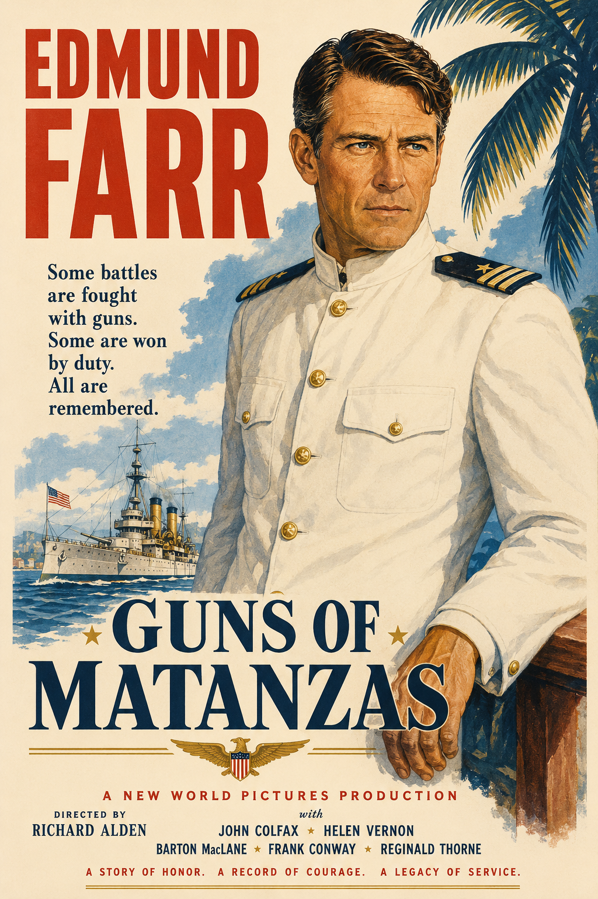
Guns of Matanzas
Guns of Matanzas
~1938 · Naval Epic
New World Pictures
Edmund Farr's final film, released posthumously — he died early 1938 during post-production. A Caribbean War naval epic.
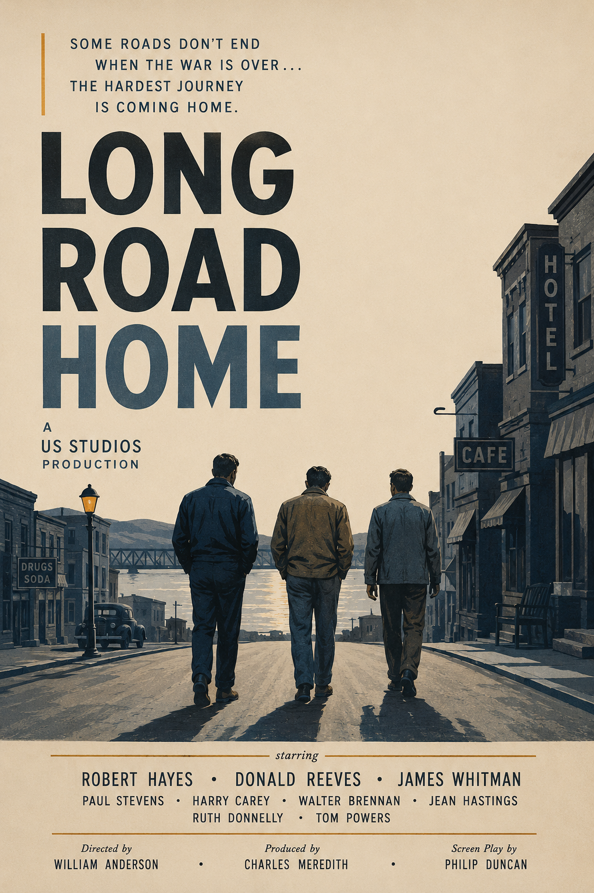
Long Road Home
Long Road Home
~1944 · Veterans' Drama
US Studios
The veterans' cinema landmark. Not a war film — the war is mostly past tense.
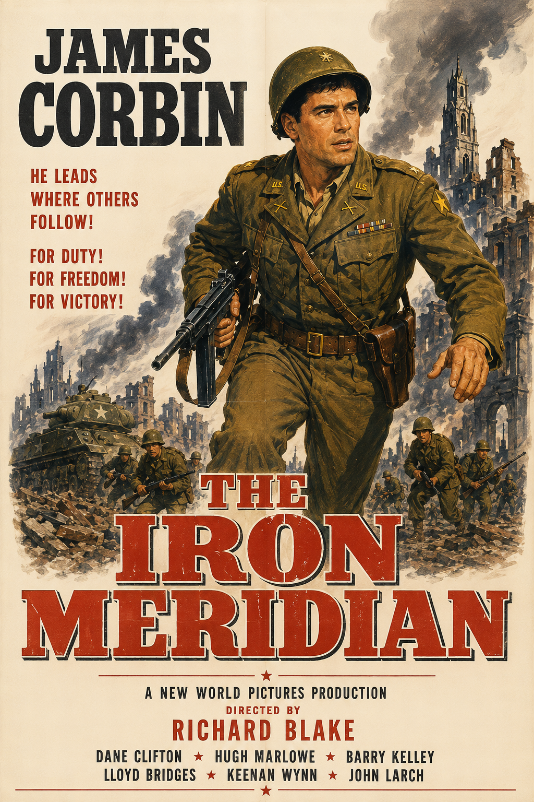
The Iron Meridian
The Iron Meridian
~1954 · Global War Epic
New World Pictures
The era's big commercial war epic — set in the Global War's European theater. James Corbin leads as a composite officer: heroic, uncomplicated.
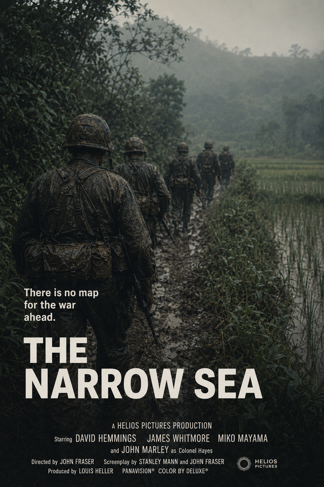
The Narrow Sea
The Narrow Sea
~1969 · War Drama
Helios Pictures
The ground-level Choson War film. A small unit of NAU soldiers in the grinding middle of the conflict before the bombing decision changes everything.
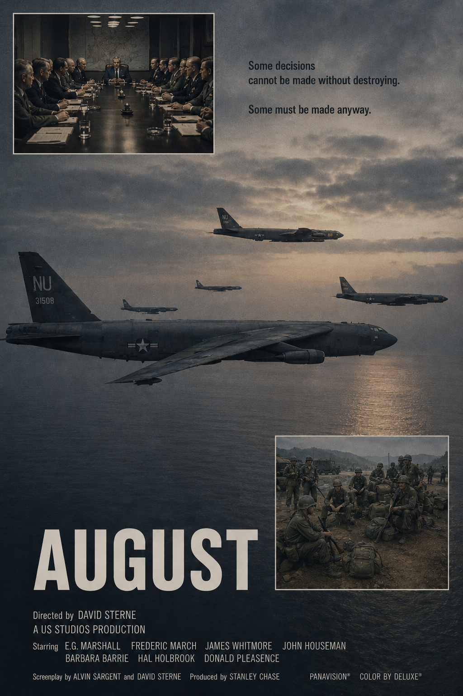
August
August
~1970 · War Drama
Dir. David Sterne · US Studios
David Sterne's Choson War film — the moral reckoning picture. The bombing decision and its aftermath from a civilian and diplomatic angle.
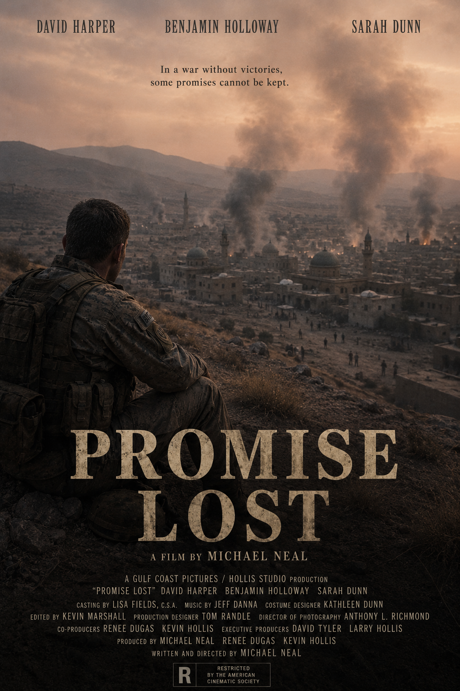
Promise Lost
Promise Lost
~2003–2005 · War Drama
Gulf Coast Pictures / Hollis co-production
A small GPC unit, present near the 1998 Ottoman atrocity inside a GPC-protected zone, unable to stop it. Ground-level, gritty, Gulf Wave-adjacent register — the film that gave the era's defining polit
Flight to Frankfurt
Flight to Frankfurt
~2004–2006 · Drama
New World Pictures
The 1999 downing of a Delhi-to-Germany civilian airliner — mistaken by Ottoman forces for a GPC military flight — told through the families of the mixed international passenger manifest. NWP-scale ens
Speculative History
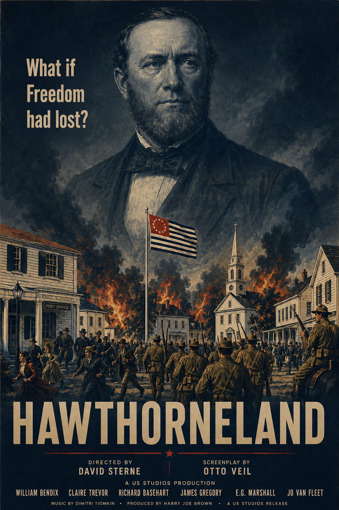
Hawthorneland
Hawthorneland
1963 · Speculative / Alternate History
Dir. David Sterne (open canvas) · US Studios
The film that launches the speculative history / alternate history genre in American cinema. Premise TBD.
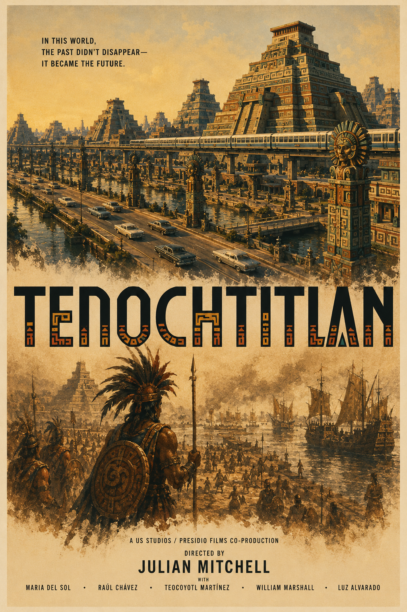
Tenochtitlan
Tenochtitlan
~1967–1968 · Speculative History
Californian Co-Production
Part of the post- Hawthorneland spec history wave. Premise: the Aztec Empire successfully resisted Spanish colonization and survives into the modern era.
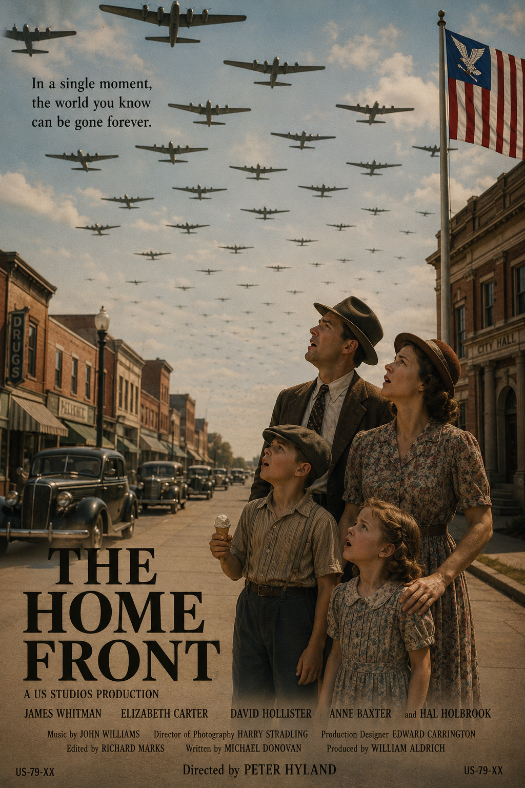
The Home Front
The Home Front
~1979–1980 · Speculative History
The spec history genre's major late-1970s entry — a deliberate wink at the alternate history tradition. Premise: the War Between the States dragged on for a decade without British entry; the 1867 ceas
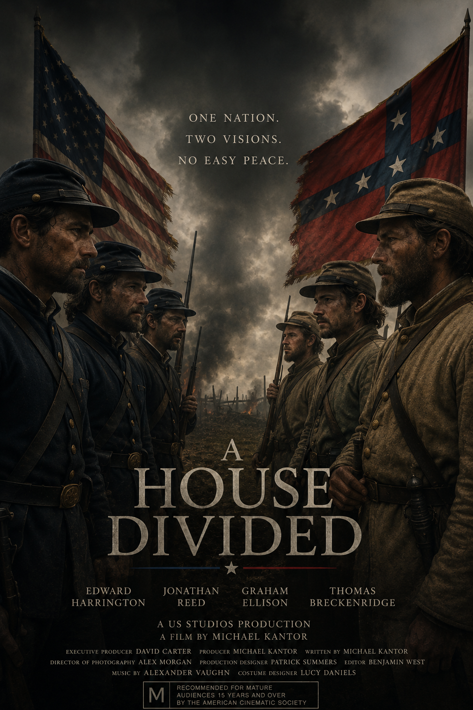
A House Divided
A House Divided
2009 · Speculative History
US Studios
The genre's most direct engagement yet with WBT's own point of divergence — and its inverse. Premise: the War of 1812 resolves as it did in our own world, Washington is never burned, and the capital r
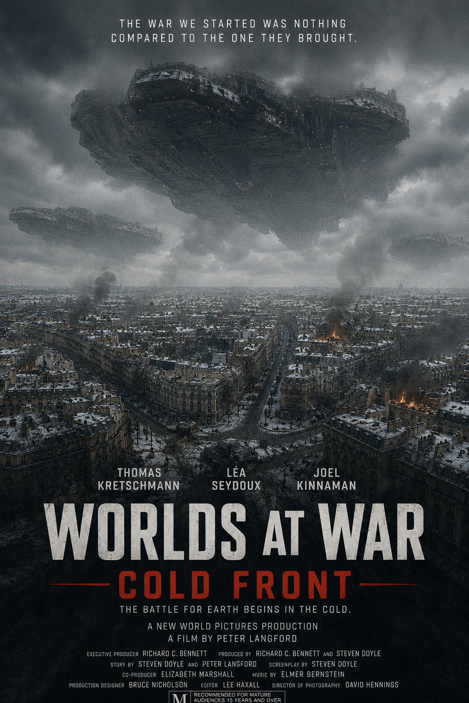
Worlds at War: Cold Front
Worlds at War: Cold Front
~2008–2009 · Speculative History / Science Fiction
The spec history genre's most ambitious entry yet — an alien invasion during the Global War (~1932–40), launching a new franchise. The title plays on WBT's own avoidance of the term "World War" (they
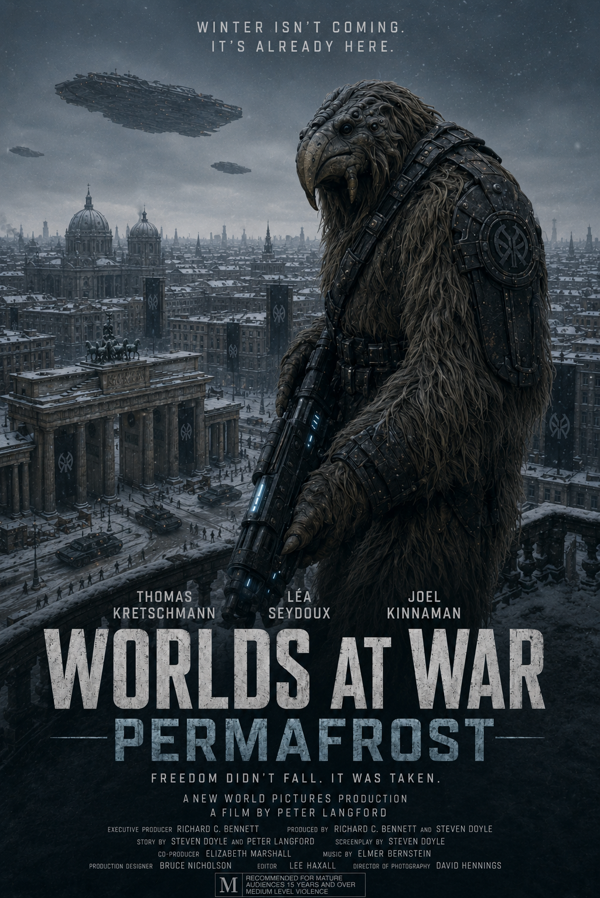
Worlds at War: Permafrost
Worlds at War: Permafrost
~early 2010s · Speculative History / Science Fiction
The alternate Global War's brutal climax — the cold-adapted invaders at the peak of their dominance, the conflict's darkest hour before any thaw. The franchise's grimmest entry, setting up everything
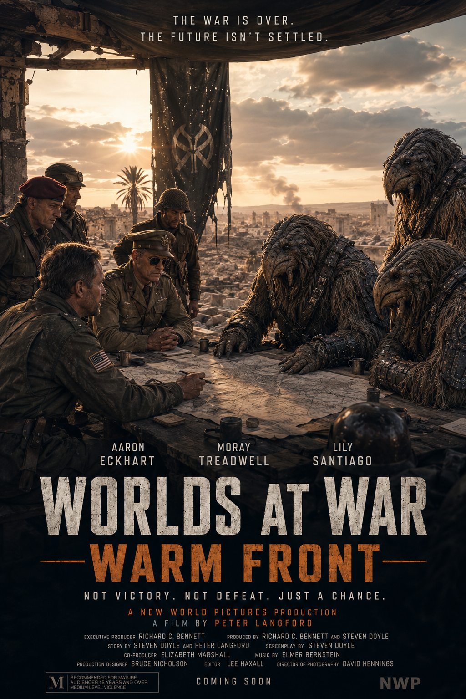
Worlds at War: Warm Front
Worlds at War: Warm Front
~2020s · Speculative History / Science Fiction
A time-jump to this alternate timeline's postwar era — "warm front" works on two levels: a literal climate shift eroding the cold-adapted invaders' advantage, and a political thaw as humans and aliens
Science Fiction
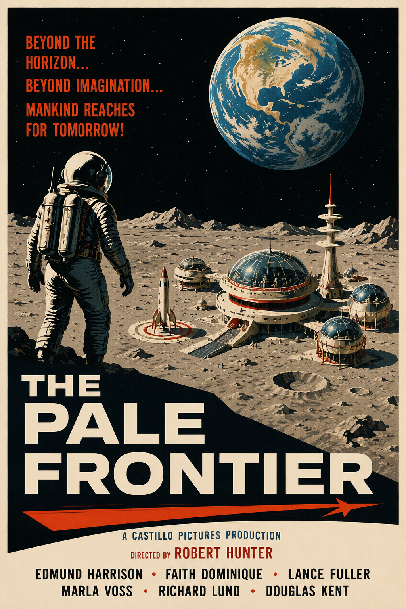
The Pale Frontier
The Pale Frontier
~1955 · Science Fiction
Castillo Pictures
The science fiction genre's arrival as a mainstream commercial proposition. A near-future story about the first human expedition to establish a permanent Moon research station — the fission era's tech
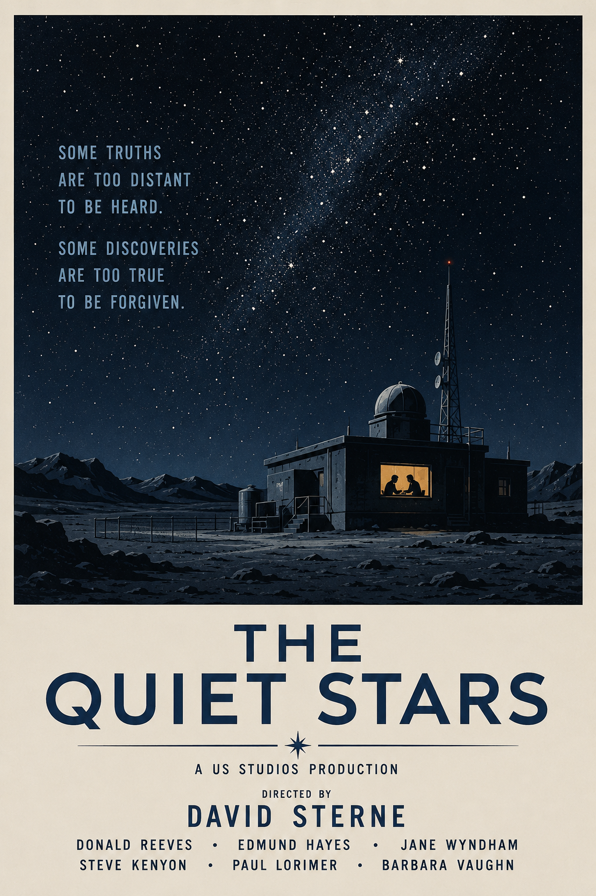
The Quiet Stars
The Quiet Stars
~1956 · Science Fiction
Dir. David Sterne · US Studios
David Sterne's oblique homophilia film. Two scientists at an isolated research installation develop a profound bond while working on a classified project; discovered by institutional authorities, they
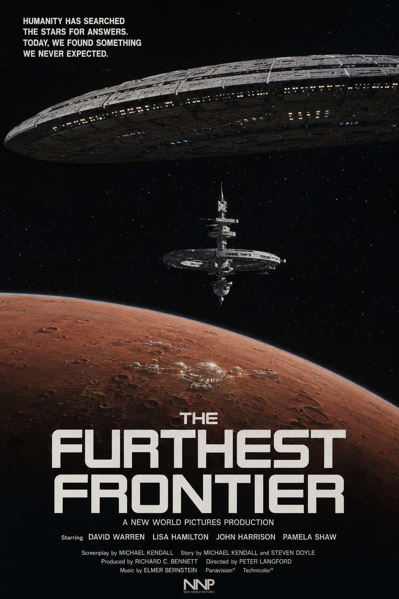
The Furthest Frontier
The Furthest Frontier
1978 · Science Fiction
The major sci-fi film franchise of the post-moon landing era. Opens optimistically — humanity spreading through the solar system, the GPC evolved into a unified Earth governance body.

FF: Common Ground
FF: Common Ground
~1981–1982 · Science Fiction
The second Furthest Frontier film. The alien arrival forces Earth/Mars tension into suspension as humanity scrambles to present a unified front.

FF: United Front
FF: United Front
~1988–1990 · Science Fiction
The original trilogy's closer, arriving after a time jump from Common Ground . The uneasy first contact has matured into something more formal — a genuine human-alien alliance, with a governing compac
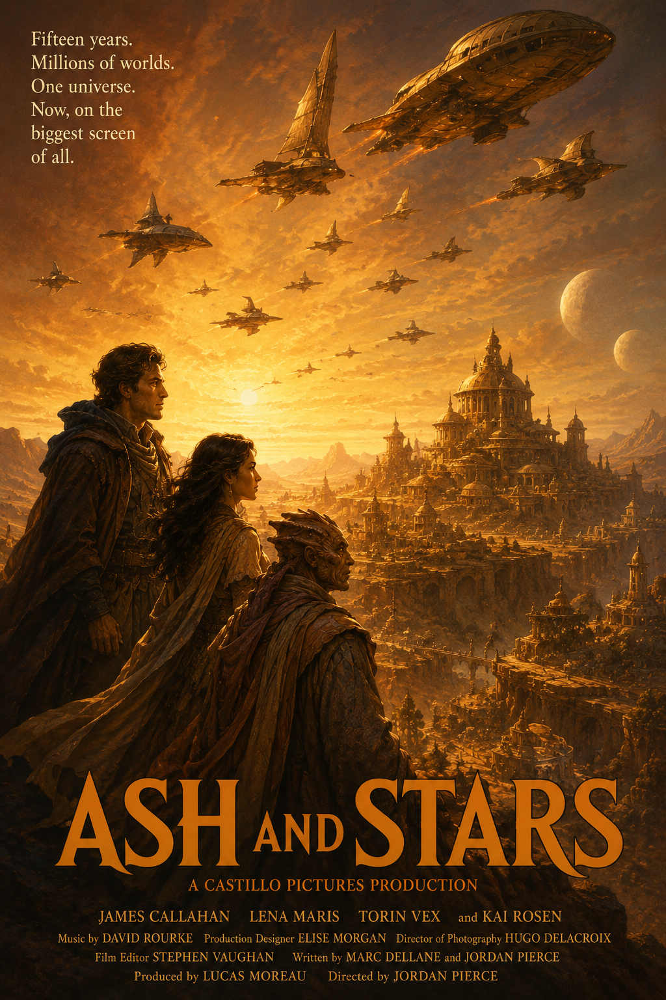
Ash and Stars
Ash and Stars
~1984–1985 · Science Fiction / Fantasy
Ash and Stars launched on TC ~1968–69 — a serialized fantasy-in-space series following protagonists navigating a galactic empire in decline. A full cultural institution over fifteen years of TC life b
Across All Time
Across All Time
~1991–1992 · International Breakthrough
Japanese Production
Japan's major international breakthrough film. Four connected stories across time — pre-modernization Japan, the early republic (~1904–10), the Global War era (~1935–40), and the near-to-medium future

FF: Mission to Mars
FF: Mission to Mars
~2003–2004 · Science Fiction
The founding mission — humanity's first permanent Mars colony, the GPC-evolved Earth government at its most optimistic. Sets up everything the original trilogy takes for granted: how Mars came to be s

FF: Red Home
FF: Red Home
~2005–2006 · Science Fiction
Mars grows — and a generation born on Mars rather than Earth starts asking what "home" means and who gets to decide their future. The sovereignty/integration tension that defines the original trilogy'

FF: The Voyagers
FF: The Voyagers
~2007–2008 · Science Fiction
The trilogy's structural surprise — an entire film from the alien perspective, following their long journey toward the Sol system. Not villains, not invaders in any simple sense — travelers, with thei

FF: New Contact
FF: New Contact
~2020s · Science Fiction
The alliance's first diplomatic overture to a newly encountered civilization — refused. Not hostility for its own sake: this second species has its own coherent reasons for staying outside the compact

FF: Divided Ground
FF: Divided Ground
~2020s · Science Fiction
Conflict over territory both civilizations claim — the trilogy's escalation, echoing Common Ground 's title with its opposite meaning. The alliance's unity, hard-won in the original trilogy, is tested

FF: New Front
FF: New Front
~2020s · Science Fiction
Resolution — not full alliance, but an uneasy coexistence the alliance and the new civilization both have to maintain rather than simply achieve. Echoes United Front without claiming the same unity; "
Ash and Stars: Eclipse
Ash and Stars: Eclipse
~2020s · Science Fiction / Fantasy
One of the three or four new space nations born from A New Dawn 's collapse has grown into something that looks like the answer to everything — stability, unity, prosperity. It's quietly authoritarian
Horror
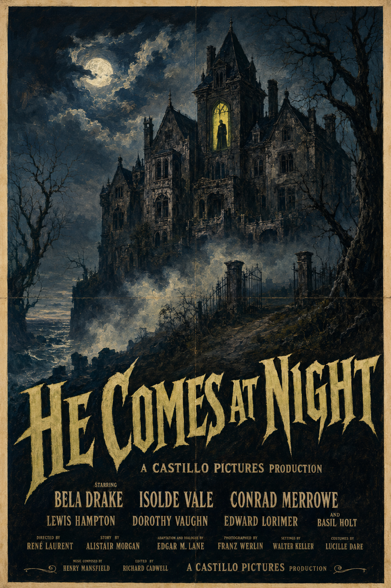
He Comes at Night
He Comes at Night
~late 1920s–1930s · Horror
Castillo Pictures
The cycle's vampire picture — atmospheric, shadow-heavy, a European predator arriving in an American gothic setting. Establishes the visual vocabulary (candlelight, fog, silhouette) that defines the c
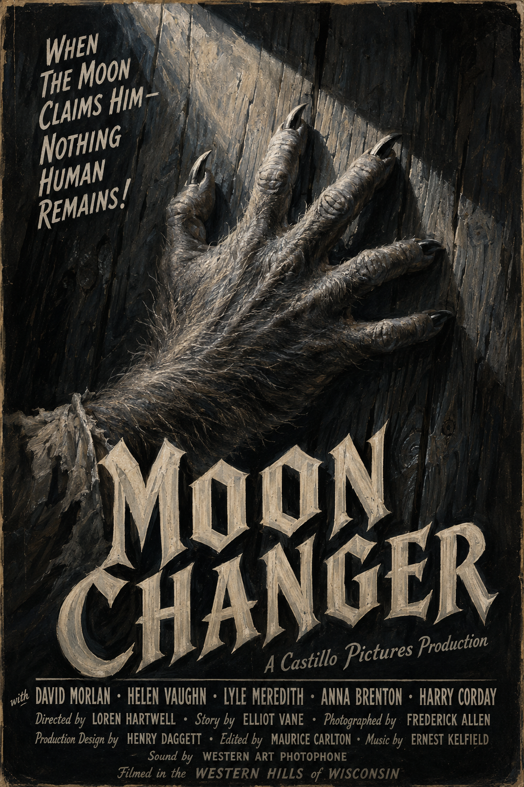
Moon Changer
Moon Changer
~1930s · Horror
Castillo Pictures
The cycle's werewolf picture — transformation as tragedy rather than spectacle, the Code-era restraint again working in the film's favor. The "monster" is sympathetic; the horror is in the loss of sel
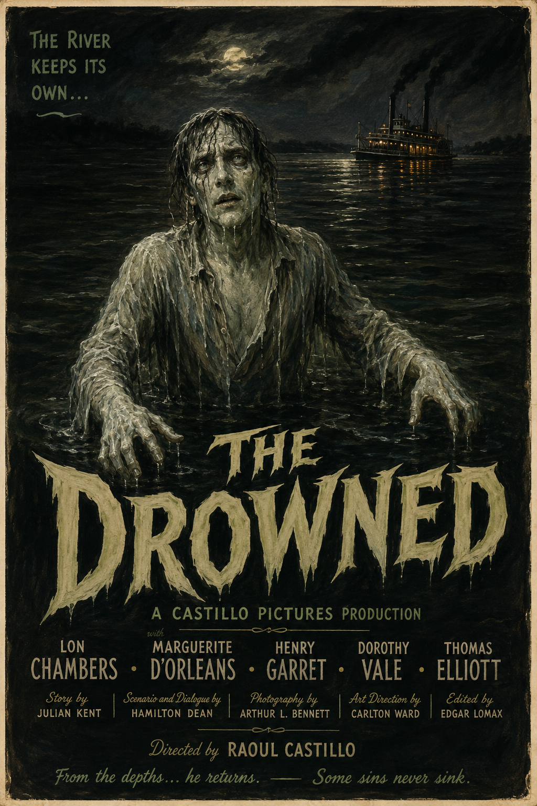
The Drowned
The Drowned
~1930s–1940s · Horror
Castillo Pictures
The cycle's most distinctly WBT entry — a revenant tied to the Mississippi or Ohio River, drowned and returned. Geographically and culturally rooted in the river-valley gothic tradition that also prod
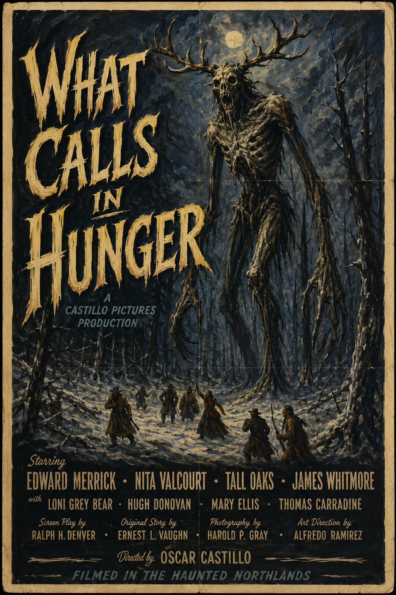
What Calls in Hunger
What Calls in Hunger
~1930s–1940s · Horror
Castillo Pictures
The cycle's fourth entry, drawing on Wendigo mythology (Algonquian-speaking peoples) — a figure that, given over a century of deeper integration since 1861, had entered the broader American folkloric
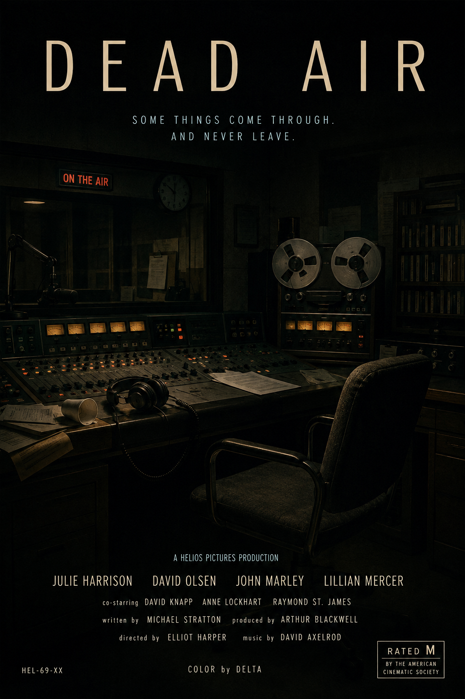
Dead Air
Dead Air
~late 1960s–early 1970s · Horror
Dir. Margaret Ashby · Helios Pictures
A person alone with recording equipment — audiograph or early radio apparatus — begins capturing something on tape that shouldn't be there. The dread is entirely auditory: listening, replaying, never
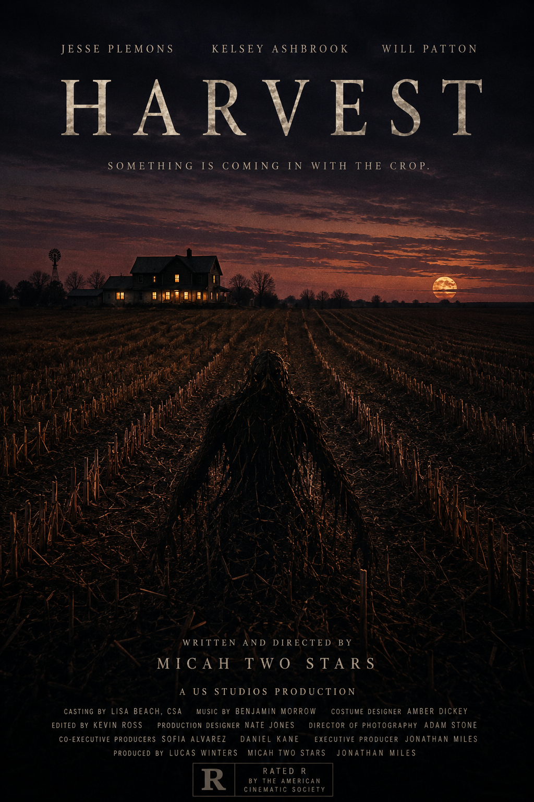
Harvest
Harvest
~2020s · Horror
Isolated family/farm, seasonal and agricultural dread — "something is being harvested" carries a double meaning beyond the crops. Solitary, claustrophobic register.
The Gathering
The Gathering
~2020s · Horror
A community event — reunion, festival, or religious gathering — where something goes wrong. Communal/social dread, the inverse register from Harvest 's isolation.
Animation
Hansel and Gretel
Hansel and Gretel
~1932
Parker Studios
The first animated feature film. Lauretta Parker had been developing it for years before the war began — release coinciding with the war's outbreak was circumstance, not calculation.
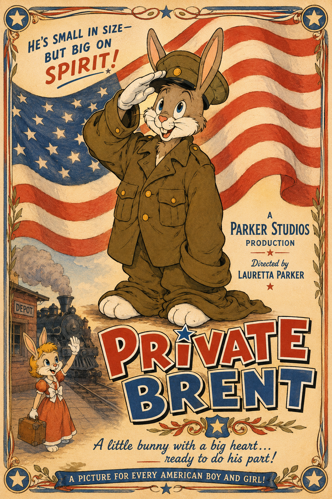
Private Brent
Private Brent
~1936 · Animated Short
Parker Studios
The beloved wartime Brent Bunny short. Brent drafted — comedic basic training — never shipped overseas, never seen in combat.
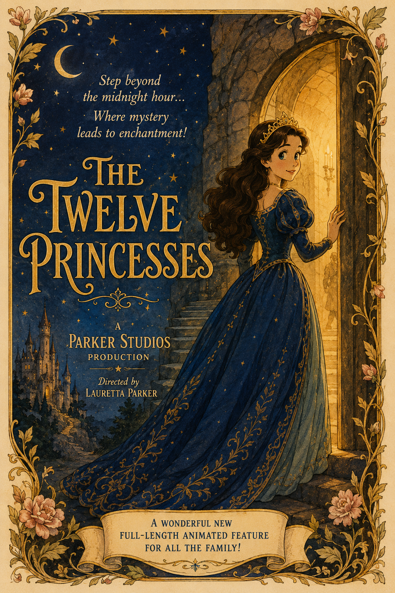
The Twelve Princesses
The Twelve Princesses
~1943
Parker Studios
Parker Studios' first color animated feature — arriving a year after Moses , Parker moving quickly to stake her claim in the color era.
Grandmother's Garden
Grandmother's Garden
~2020s · Animation — Hand-Crafted
Dir. Kenji Aoyama · Tsukikage
Building on Across All Time 's 1991–92 breakthrough, Japanese animation develops its own distinctive hand-crafted tradition — Tsukikage ("moon shadow"), founded by director Kenji Aoyama , achieves maj
International Cinema
Tenochtitlan
Tenochtitlan
~1967–1968 · Speculative History
Californian Co-Production
Part of the post- Hawthorneland spec history wave. Premise: the Aztec Empire successfully resisted Spanish colonization and survives into the modern era.
Across All Time
Across All Time
~1991–1992 · International Breakthrough
Japanese Production
Japan's major international breakthrough film. Four connected stories across time — pre-modernization Japan, the early republic (~1904–10), the Global War era (~1935–40), and the near-to-medium future
Das Volk Spricht
Das Volk Spricht
~1993–1994 · International Breakthrough
German Republic
The German Republic's major international breakthrough film. A dramatization of the 1938 democratic revolution — the mass protests, the parliamentary collapse, the King's abdication, the republic proc
Grandmother's Garden
Grandmother's Garden
~2020s · Animation — Hand-Crafted
Dir. Kenji Aoyama · Tsukikage
Building on Across All Time 's 1991–92 breakthrough, Japanese animation develops its own distinctive hand-crafted tradition — Tsukikage ("moon shadow"), founded by director Kenji Aoyama , achieves maj
Romance
Home Water
Home Water
~1939 · Home Front Drama
Hollis Studio
A home front drama following a family with sons overseas. Marguerite Thibodaux in her mature career peak.
Gold Coast
Gold Coast
~1946 · Romantic Drama
Helios Pictures
William Cord's postwar romantic peak — a glossy, beautifully photographed romantic drama making full expressive use of color in a non-epic context. Cord opposite Vivienne Marsh in their first major pa
Coral and Gold
Coral and Gold
~1951 · Romantic Epic
Helios Pictures
Helios caught in the middle — a lush romantic epic set in the Caribbean in the 1820s. Cord and Marsh in their third and most commercially successful pairing; their screen chemistry at its peak.
Gulf Summer
Gulf Summer
~1957 · Melodrama
Helios Pictures
Ida Welles's breakthrough into serious material. A melodrama set in New Orleans following a woman navigating the dissolution of her marriage and the discovery of her own independence.
A Season Apart
A Season Apart
~1964 · Romantic Drama
Helios Pictures
Set in New Boston — the Pacific Northwest's major city, the NAU's Pacific gateway. A woman choosing between two versions of her life: the stable, conventional path and the uncertain, vital one.
The Long Way
The Long Way
~1975 · Drama
Dir. Ruth Calloway · Hollis Studio
Calloway pushing her aesthetic into less familiar territory — a road film, more formally adventurous than her previous work. A woman in motion, landscape as moral presence.
Together
Together
~1981–1982 · Romance
Dir. Peter Vane · Hollis Studio
Peter Vane's debut feature. Two women in a contemporary relationship — the marriage equality question present the way a locked door is present, felt without being announced.
At Last
At Last
~1986–1987 · Romance
Helios Pictures
The cinema's response to marriage equality — a year or two after the fact. Two men.
Hesperia
Hesperia
2003 · Historical Romance
New World Pictures
The SS Hesperia (Continental Steamship Company, 49,200 gross tons, quadruple screw) set a new American transatlantic speed record on its maiden voyage in April 1913 — four days, eighteen hours, just e